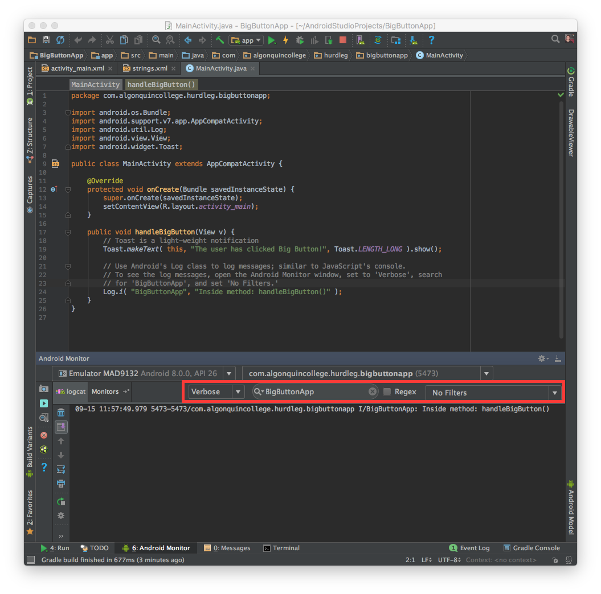

Android provides a logcat Monitor that's useful to display logging and debugging messages. The local Monitor displays system-level messages, such as when garbage collection occurs, as well as messages that you can add to your app using the Log class. It displays messages in realtime and also keeps a history so you can view older messages [1].
To log a message, call one of class Log's static methods. For example:
Log.d( tag, message );
Log.d() will log message with a priority of debug.
The other static methods include (in order of priority, starting with the lowest):
Log.v( tag, message ); // verbose (lowest priority)
Log.d( tag, message ); // debug
Log.i( tag, message ); // info
Log.w( tag, message); // warning
Log.e( tag, message ); // error
Log.a( tag, message ); // assert (highest priority)
Verbose messages should never be compiled into an application except during development. Debug logs are compiled in but stripped out at runtime. Error, warning, and info logs are always kept.
The tag is a user-defined string. For example:
Log.d( "hurdleg", "the index is: " + i );
As a best practice, declare a TAG constant in your class:
private static final String TAG = "hurdleg";
Java's keyword static declares TAG to be a class variable, meaning all instance of this class have the same value of TAG, "hurdleg" in this example. The keyword final means the value is a constant (like const in C++), and cannot be changed.
And then:
Log.d( TAG, "the index is: " + i );
In this example, I've set the TAG to be my username (hurdleg). By convention, most Android developers set the TAG to the (simple) name of the class. For example:
public class MainActivity extends Activity {
private static final String TAG = MainActivity.class.getSimpleName();
To view your log messages:
You should see:

To help reduce the amount of log messages, you can set the log level and search for your message's TAG.
In the above screenshot, the log level is set to Verbose, and can be changed to any of the log priorities (Debug, Info, etc.) by clicking the drop-down menu.
To filter the log message, enter your TAG in the search area. In this example, I'm searching for the tag "BigButtonApp".